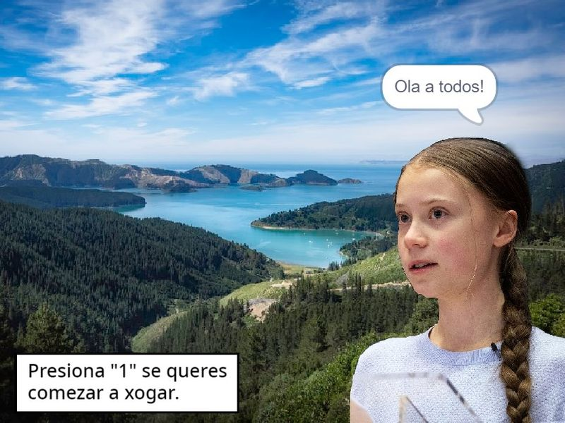

Os Proxectos
A continuación amosamos a toda a comunidade do noso instituto os proxectos que fixemos o longo do curso das TIC. Foi un longo recorrido que termina agora coa satisfacción de dalos a coñocer a todos e todas vos. Esperamos que os gusten!.

O xogo das 3Rs
Segue os consellos de Greta e trata de Reciclar, Reutilzar e Reusar o mallor número de enseres que poidas, o noso planeta agradecerácheo.
Autores: Celia,Sara,Natalia e Pablo.

O homiño de Reciendumbre
Un homiño da cidade de Reciendumbre debe apagar os interruptores dunha vivenda contestando correctamente as preguntas relacionadas coa enerxía, queres axudalo?.
Autores: Noah,Amanda e Alan.